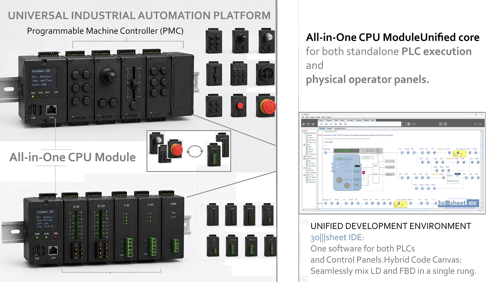

3o|||sheet is a universal software environment for developing applications for Programmable Logic Controllers (PLCs).
- Hardware Independence
- Integrated Development Environment (IDE)

3o|||sheet is a universal software environment for developing applications for Programmable Logic Controllers (PLCs).

A lightweight, cross-platform IDE built on OpenJDK. Runs on single-board computers with minimal resources.
Supports LD, FBD, and ST languages plus a virtual machine instruction set for advanced logic design.
Offers extensive debugging capabilities: developers can modify code in real-time without physically restarting the PLC.
The development environment can create executable programs for the PLC in two modes:

Is a standalone application that compiles text programs written in LD, FBD, ST and .3osheet into executable bytecode for a virtual machine.
The compiler can be integrated into third-party development tools (for example, Visual Studio, etc.).
It includes a complete set of tools for working with complex custom variables, virtual stack, and context management, enabling the development of sophisticated recursive algorithms and multithreaded tasks (coroutines).

Register-based Virtual Machine running safely in a sandbox. Works on devices with only 8 KB RAM and full peripheral access.

The system supports two modes of operation: either the execution of multiple independent contexts (virtual machines running distinct programs) or a single program operating in DME mode with N replicas

The platform incorporates a unique divergent architecture designed for maximum reliability and fault tolerance in safety-critical applications. Divergent Multi-Version Execution (DME) is a runtime semantic consistency verifier for diversified executions. Each replica is compiled independently, producing distinct physical code and data memory layouts while preserving identical opcode-level semantics and isomorphic control-flow graphs. Faults are detected by comparing canonical instruction traces—including opcodes, register identifiers, loaded/stored values, and computed results—while explicitly discarding layout-dependent addresses. The approach targets bare-metal embedded systems without an MMU, particularly 32-bit controllers. DME transforms low-level correlated perturbations into observable semantic divergence or structural address-space collapse without altering program semantics.
Unique protection mechanisms of Divergent Multi-Version Execution architecture that standard redundancy schemes cannot provide.
| Threat or System Requirement | Standard Lockstep / TMR | DME Superiority ✨ |
|---|---|---|
|
Highly Correlated Faults (EM pulses, radiation, voltage glitches) |
DEFENSELESS A single perturbation shifts all replicas identically. The system accepts the failure as correct. |
Absolute Protection Driven by complementary branch signs and NOP-decorrelation, identical faults force replicas onto divergent semantic paths. Instant detection! |
|
Control-Flow Hijacking (Return address corruption, buffer overflows) |
BLIND SPOT If the corrupted address falls within an allowed region, all replicas transition simultaneously. |
Zero-Latency Intercept Our Address Non-Aliasing layer halts execution the exact millisecond cross-replica addresses collapse, long before any bad data spreads. |
|
Software Bug Resilience (Null pointer dereference, "wild" pointers) |
UNSUPPORTED Logical software bugs replicate across identical architectures without triggering flags. |
Runtime Semantic Validation Accidental value-as-pointer assignments trigger immediate address-space collapse detection. DME acts as a live validator for pointer semantics. |
|
Hardware Costs & Constraints (Requirements for high-end cores and MMUs) |
HIGH DEPEDENCY Demands specialized, expensive multi-core chips with heavy silicon overhead. |
Hardware Agnostic Designed natively for bare-metal, low-cost 32-bit controllers (e.g., ARM Cortex-M class) without virtual memory (MMU). Entirely managed at compile time. |
Measured execution times for boolean and Integer and floating-point operations on different microcontrollers and PLCs.
| Device | Boolean Operation | Integer / Floating-Point Operation |
|---|---|---|
| STM32G030 64Mhz (3o|||sheet Runtime) | 1.0 μs | 3.6/24 μs |
| STM32F103 72Mhz (3o|||sheet Runtime) | 1.1 μs | 3.2/16.6 μs |
| STM32F407 168Mhz (3o|||sheet Runtime) | 0.6 μs | 1.8/1.8 μs |
| CH32V203 (144Mhz Mode) (3o|||sheet Runtime) | 0.8 μs | 2.1/18.3 μs |
| CH32V307 144Mhz (3o|||sheet Runtime) | 0.8 μs | 2.0/2.0 μs |
| Rockwell Micro810 | 2.5 μs | 8.6/ - μs |
| Rockwell Compact GuardLogix 5380 1Ghz | ~0.01–0.05 μs | ~0.01–0.08 μs |
| Siemens S7-1200 | ~0.08μs | ~2.3μs-4 μs |

The Programmable Machine Controller (PMC) is a hardware-software ecosystem powered by 3o|||sheet. It integrates the industrial controller, I/O modules, and operator controls (buttons, joysticks, encoders, and touchscreens) into a single execution layer, removing the need for separate PLC hardware and HMI panels that communicate over slow communication protocols.
Traditional PLC systems provide a controller and I/O expansion, while buttons, encoders, joysticks, faders and other operator controls are normally selected and integrated separately. The result is often a control system assembled from components with different mechanical designs, interfaces and manufacturers. PMC changes this model. The processor module becomes the core of a configurable physical control system. A user can snap on the modules required for the machine: conventional I/O modules when expansion is needed, or operator modules when a physical control interface is required.
The key idea is simple: operator controls are not external accessories connected to the PLC; they become native physical resources of the PLC.
PMC allows the same platform to become either a conventional PLC or a complete physical operator console.
The developer chooses the required modules and assembles the controller around the actual human
interface of the machine.
Examples include:
The same PMC design language can support very different human-machine environments. The point is not
that all applications look identical; it is that all of them can be built from the same coherent modular
platform.
Representative application concepts:
The mechanical interface is part of the PMC architecture. Processor, I/O and operator modules are designed as members of the same product family, allowing the physical interface to look and feel like a deliberately designed console rather than a collection of unrelated PLC components and third-party controls. This makes industrial design and ergonomics functional parts of the platform. A PMC system can be shaped around the human task—from a compact machine panel to a highly specialized professional operator console—while retaining a common mechanical and logical foundation.
A single computing core handles machine logic, standard industrial I/O and physical operator inputs. Buttons, joysticks, encoders and other controls can therefore be mapped into the same controller resource model instead of being treated as unrelated external devices.
When an operator module is connected, it identifies its digital profile to the CPU. The CPU evaluates the current resource map and assigns available physical lines to the module. The module then routes its physical controls onto those assigned lines. This creates a configurable hardware layer in which the physical topology can be changed without requiring the application to be rewritten for every individual panel arrangement.
Control Plane — CAN
Data Plane — Direct I/O
In PMC, “Zero-Protocol” refers specifically to the critical runtime data path. CAN is still used for discovery, registration, configuration and resource allocation. Once the physical resources have been assigned, selected high-priority controls can use a direct hardware I/O path instead of passing through a conventional runtime communication protocol stack. The architectural objective is therefore not “no protocol anywhere,” but a protocol-free real-time I/O path for the signals where deterministic response is most valuable.
The direct I/O layer provides 36–72 physical lines for high-priority elements. Once the direct resources are fully allocated, additional expansion can use the CAN interface for standard I/O, sensors, diagnostics, configuration and other lower-priority traffic.
• One platform for PLC, I/O and the physical operator workspace.
• A constructor-like approach to building machine controls.
• A unified mechanical and visual design across modules.
• Specialized ergonomic consoles without relying on a collection of unrelated third-party controls.
• Dynamic assignment of physical hardware resources.
• A direct hardware path for high-priority operator inputs.
• CAN-based discovery, configuration, diagnostics and scalable expansion.
• The same platform can remain a conventional PLC when no physical operator modules are required.
From an industrial operator workspace to a DJ console, from a lighting designer's desk to a combine driver's control panel, the underlying principle remains the same: one modular platform, one design language, configurable hardware and a unified control architecture.